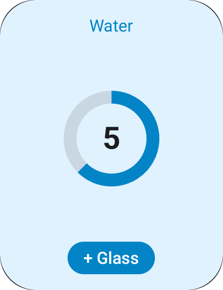
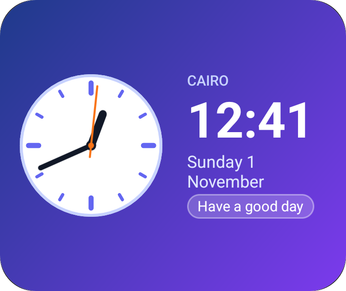

Home Screen Widgets حقيقية، مكتوبة بـ Dart بس Real home screen widgets, written only in Dart
بتوصف الـ widget بـ Dart، و build_runner بيولّد Kotlin و RemoteViews على أندرويد، و SwiftUI و WidgetKit على iOS. مش هتفتح Xcode، ومش هتكتب سطر Kotlin ولا Swift.
You describe the widget in Dart, and build_runner generates Kotlin and RemoteViews for Android and SwiftUI and WidgetKit for iOS. You never open Xcode or write a line of Kotlin or Swift.
flutter pub add flutter_native_widget


ليه native؟Why native?
الـ widget اللي على الشاشة الرئيسية مش بيرسمها الأبليكيشن بتاعك. بيرسمها الـ launcher على أندرويد و SpringBoard على iOS، وهما مابيقبلوش غير وصف للشكل بلغتهم: RemoteViews على أندرويد، و SwiftUI جوه Widget Extension صغيرة وعمرها قصير على iOS. علشان كده محرك Flutter مايقدرش يشتغل هناك.
A home screen widget is not drawn by your app. The launcher (Android) or SpringBoard (iOS) draws it, and they only accept a description of the UI in their own format: RemoteViews on Android, SwiftUI inside a small, short-lived Widget Extension on iOS. That is why the Flutter engine cannot run there.
Native بجدTruly native
النص والساعة والأزرار views حقيقية، مش صورة. بتتظبط لوحدها مع dark mode والحجم والـ RTL.
Text, clocks and buttons are real views, not a picture. They follow dark mode, size and RTL on their own.
شغّال والأبليكيشن مقفولWorks with the app closed
الأزرار، والـ timeline، والساعة، والتحميل من النت كلهم بيشتغلوا من غير ما Flutter يصحى.
Buttons, timelines, clocks and downloads all run without waking Flutter up.
كود في مكان واحدOne source of truth
بتكتب الـ widget مرة واحدة بـ Dart. لو غيّرتها، شغّل build_runner والمنصتين يتحدّثوا مع بعض.
Write the widget once in Dart. Change it, run build_runner, and both platforms update together.
إزاي بتشتغل: وقت الـ buildHow it works: at build time
الـ generator بيقرا الـ @HomeScreenWidget بتاعك كـ constant (من غير ما يشغّله)، ويحوّله لشكل وسيط (IR)، وبعدين يكتب منه 3 حاجات.
The generator reads your @HomeScreenWidget as a constant (without running it), turns it into an intermediate representation (IR), and writes three things from it.
lib/widgets.dart
annotation فيه layout const وحقول.
An annotation with a const layout and fields.
reader → IR
الـ analyzer بيقرا الشجرة، ويتأكد منها، ويطلّع أخطاء واضحة.
The analyzer reads the tree, validates it and reports clear errors.
emitters
emitter لكل منصة بيكتب الكود بتاعها.
One emitter per platform writes its code.
Android
Kotlin providers و RemoteViews XML و drawables وتعديلات في الـ manifest
Kotlin providers, RemoteViews XML, drawables, manifest entries
iOS
SwiftUI و WidgetKit providers و App Intents
SwiftUI, WidgetKit providers, App Intents
Dart
API typed زي CounterWidget.save(count: 5)
A typed API like CounterWidget.save(count: 5)
الداتا بتتنقل إزاي؟How data moves
الأبليكيشن والـ widget عمرهم ما بيكلّموا بعض على طول. الاتنين بيقروا ويكتبوا في مخزن مشترك: SharedPreferences على أندرويد، و UserDefaults الخاصة بالـ App Group على iOS. كل قيمة بتتخزن كنص تحت المفتاح fnw.<Widget>.<field>.
The app and the widget never talk to each other directly. Both read and write a shared store: SharedPreferences on Android and the App Group's UserDefaults on iOS. Every value is stored as a string under fnw.<Widget>.<field>.
بتحفظ القيمةSaves a value
await CounterWidget.save(count: 5);الـ API المتولّد بيحوّل كل حقل لنص، وبعدين بيطلب إعادة رسم.
The generated API turns each field into a string, then asks for a redraw.
مفتاح لكل حقلOne key per field
fnw.Counter.count: "5"
fnw.Tasks.title0: "Buy bread"
fnw.Tasks.done0: "true"
fnw.PrayerTimes.__timeline: "[…]"ده مكان الحقيقة الوحيد. اللي بيكتب فيه ممكن يكون الأبليكيشن، أو زرار native، أو callback، أو download.
The single source of truth. The app, a native button, a callback or a download can write here.
بيقرا ويرسمReads and draws
// Android: AppWidgetProvider
prefs.getString("fnw.Counter.count")
// iOS: TimelineProvider
store.string(forKey: "fnw.Counter.count")بيبدّل {count} بالقيمة، ويقيّم الـ NWIf، ويرسم.
Replaces {count} with the value, evaluates each NWIf, and draws.
الطرق اللي الداتا بتوصل بيها للـ widgetEvery way data reaches a widget
كل طريقة في الآخر بتكتب في نفس المخزن. الفرق بينهم: مين اللي بيكتب، وإمتى.
They all end up writing the same store. What differs is who writes, and when.
من الأبليكيشنFrom the app
XWidget.save(...)بيكتب كل حقل في المخزن.- بعدها بينادي
update()، فيتبعت broadcast لـAppWidgetProviderعلى أندرويد، وWidgetCenter.reloadTimelinesعلى iOS. - الـ widget تقرا القيم وتترسم من جديد.
XWidget.save(...)writes each field to the store.- It then calls
update(): a broadcast to theAppWidgetProvideron Android,WidgetCenter.reloadTimelineson iOS. - The widget reads the values and redraws.
أزرار native (من غير Dart)Native buttons (no Dart)
- الضغطة على
NWAction.increment/toggle/set/cycleبتتحول لـ URI زيfnw://action?w=Counter&op=inc&k=count. - على أندرويد:
PendingIntentبيروح للـ provider، اللي بيعدّل القيمة فيSharedPreferences. على iOS 17+:AppIntentجوه الـ extension بيعمل نفس الحاجة. - الـ widget بتترسم من جديد على طول، ومحرك Flutter مابيشتغلش خالص.
- A tap on
NWAction.increment/toggle/set/cyclebecomes a URI such asfnw://action?w=Counter&op=inc&k=count. - Android: a
PendingIntentreaches the provider, which changes the value inSharedPreferences. iOS 17+: anAppIntentin the extension does the same. - The widget redraws right away; the Flutter engine never starts.
Callbacks بـ DartDart callbacks
NWAction.callback('next')بيبعت URI للـHomeWidgetBackgroundIntentعلى أندرويد، أو لـFNWCallbackIntentعلى iOS.- الـ home_widget بيشغّل Dart في background isolate وينادي الـ
@WidgetCallbackبتاعك ومعاهWidgetEvent. - انت تحسب اللي محتاجه وتنادي
save()، فالـ widget تتحدّث.
NWAction.callback('next')sends a URI toHomeWidgetBackgroundIntenton Android, or toFNWCallbackIntenton iOS.- home_widget runs Dart in a background isolate and calls your
@WidgetCallbackwith aWidgetEvent. - You compute what you need and call
save(); the widget updates.
Timeline
saveTimeline([...])بيرتّب الـ entries ويحفظها JSON فيfnw.<Widget>.__timeline.- على أندرويد: الـ provider بيختار الـ entry الحالية، ويضبط
AlarmManagerعلى ميعاد الـ entry اللي بعدها (exact لو مسموح). - على iOS: كل entry بتبقى
TimelineEntryفي WidgetKit، والنظام بيبدّل بينهم لوحده.
saveTimeline([...])sorts the entries and stores them as JSON infnw.<Widget>.__timeline.- Android: the provider picks the current entry and sets an
AlarmManageralarm for the next one (exact when allowed). - iOS: each entry becomes a WidgetKit
TimelineEntry; the system switches between them.
من النت (NWRefresh)From the web (NWRefresh)
- الكود الـ native بيحمّل الـ URL بنفسه:
HttpURLConnectionعلى أندرويد، وURLSessionجوه الـ extension على iOS. - كل حقل بياخد قيمته من مسار في الـ JSON، زي
current_condition.0.temp_C، وitems.#.titleلحقل متكرر. - بيحمّل كل
every(15 دقيقة على الأقل)، ولو فشل بيحاول تاني بعد 5 دقايق.
- Native code downloads the URL itself:
HttpURLConnectionon Android,URLSessionin the extension on iOS. - Each field takes a value from a JSON path, such as
current_condition.0.temp_C, oritems.#.titlefor repeated fields. - It downloads every
every(15 minutes at least) and retries 5 minutes after a failure.
اختيار لكل نسخة (NWOption)Per-copy choice (NWOption)
- المستخدم يختار قيمة (مدينة مثلًا) لكل نسخة من الـ widget. على أندرويد ده بيحصل في Configure activity، وعلى iOS 17+ من Edit widget.
- القيم بتتخزن لكل اختيار لوحده:
WeatherWidget.saveForCity('Cairo', …). - كل نسخة بتعرض
{city}والقيم الخاصة بالاختيار بتاعها.
- The user picks a value (a city, say) for each copy of the widget: a Configure activity on Android, Edit widget on iOS 17+.
- Values are stored per choice:
WeatherWidget.saveForCity('Cairo', …). - Each copy shows
{city}and the values of its own choice.
صور مرسومة بـ FlutterImages drawn by Flutter
renderChart(MyChart())بيرسم أي Flutter widget ويحفظها PNG في الـ container المشترك.- مسار الملف بيتحفظ في الحقل (
NWField.image). - الكود الـ native بيقرا الملف، وعلى أندرويد بيصغّره لحد 800px، ويعرضه في
NWImage.
renderChart(MyChart())draws any Flutter widget and saves it as a PNG in the shared container.- The file path is saved into the field (
NWField.image). - Native code loads the file (downsampled to 800px on Android) and shows it in
NWImage.
من الـ widget للأبليكيشنFrom the widget back to the app
NWAction.openApp('/tasks')بيفتح الأبليكيشن بـ URI فيه اسم الـ widget والـ route.FlutterNativeWidget.initialLaunch()بيرجّعلك الـ launch اللي فتح الأبليكيشن، وlaunchesstream بيجيلك عليه كل launch والأبليكيشن مفتوح.- انت تعمل navigate للـ route.
NWAction.openApp('/tasks')opens the app with a URI carrying the widget name and route.FlutterNativeWidget.initialLaunch()gives you a cold start, and thelaunchesstream each launch while the app is running.- You navigate to the route.
إيه اللي يتحط في dev_dependencies؟What goes in dev_dependencies?
مش كله. الباكدج الأساسية لازم تبقى dependency عادية، لأن الكود بتاعك والكود المتولّد بيستخدموها والأبليكيشن شغّال. الـ generator و build_runner بس هما اللي بيتحطوا dev، لأنهم بيشتغلوا وقت الـ build بس، ومش بيدخلوا في الأبليكيشن اللي بتنشره.
Not all of them. The main package must be a normal dependency, because your code and the generated code use it while the app runs. Only the generator and build_runner are dev dependencies: they run at build time and never ship in your app.
| الباكدجPackage | فينWhere | ليهWhy |
|---|---|---|
flutter_native_widget | dependencies | فيها الـ DSL (NWText…) اللي بتعمله import في lib/، والـ runtime اللي الكود المتولّد بيستخدمه (save و update و callbacks).Holds the DSL (NWText…) you import in lib/ and the runtime the generated code calls (save, update, callbacks). |
flutter_native_widget_gen | dev_dependencies | الـ generator والـ CLI. بيشتغلوا على جهازك بس.The generator and the CLI. They only run on your machine. |
build_runner | dev_dependencies | هو اللي بيشغّل الـ generator.Runs the generator. |
home_widget | مش لازمNot needed | بييجي لوحده مع flutter_native_widget. ضيفه بس لو هتستخدمه انت مباشرةً، زي HomeWidget.requestPinWidget في المثال.Comes with flutter_native_widget. Add it only if you call it yourself, like HomeWidget.requestPinWidget in the example. |
dependencies:
flutter:
sdk: flutter
flutter_native_widget: ^0.1.0 # runtime + DSL
dev_dependencies:
flutter_native_widget_gen: ^0.1.0 # generator + CLI
build_runner: ^2.4.0الحدودLimitations
فيه نوعين: حدود المنصة نفسها، ودي موجودة في أي باكدج أو حتى لو كتبت native بإيدك. وحدود الباكدج دلوقتي، ودي ممكن تتحل بعدين.
Two kinds: limits of the platforms themselves, which every package (and hand-written native code) shares, and current limits of this package, which can be lifted later.
حدود المنصةPlatform limits
مفيش أنيميشن حر، يعني لا حاجة بتلف ولا بتنبض. البديل: timeline بصور مختلفة.
No free animation: nothing spins or pulses. Workaround: a timeline of different images.
مفيش تحديث كل ثانية لأي حاجة غير الساعة (NWClock) والعدّاد (NWTimer).
No per-second updates except for the clock (NWClock) and timer (NWTimer).
مفيش كتابة نص (TextField)، ولا gestures غير الضغطة (سحب، ضغطة طويلة، pinch).
No text input and no gestures other than a tap (no drag, long-press or pinch).
مفيش scroll على iOS خالص. على أندرويد في NWList بس (Android 12+).
No scrolling on iOS at all. On Android, only in NWList (Android 12+).
مفيش فيديو ولا GIF، ولا Flutter بيشتغل جوه الـ widget نفسها.
No video or GIFs, and Flutter never runs inside the widget itself.
iOS بيدّي ميزانية تحديثات حوالي 40–70 مرة في اليوم. استخدم timeline بدل التحديثات الكتير. والتحميل على iOS لازم يكون https.
iOS has a refresh budget of about 40–70 updates a day. Prefer timelines over frequent updates. iOS downloads must use https.
عقرب الثواني بيظهر على Android 12+ بس. على iOS مش ممكن.
Second hand only on Android 12+. Not possible on iOS.
ظلال و blur وأشكال بـ path مش متاحين native على أندرويد. البديل: ارسمها بـ Flutter كصورة.
Shadows, blur and path shapes are not available natively on Android. Workaround: render them with Flutter as an image.
حدود الباكدج دلوقتيCurrent package limits
| الحدLimit | السبب / البديلWhy / workaround |
|---|---|
الـ layout لازم يبقى constThe layout must be const | الـ generator بيقراه وقت الـ build. القيم المتغيرة بتيجي من الحقول و NWIf و timeline.The generator reads it at build time. Dynamic values come from fields, NWIf and timelines. |
| مينفعش تستخدم if و for العاديين، ولا functions بترجع nodesNo plain if/for or functions returning nodes | استخدم NWIf و NWRepeat، وحط الأجزاء اللي بتتكرر في const top-level.Use NWIf and NWRepeat, and share pieces as top-level consts. |
| أقصى عدد عناصر بيتحدد وقت الـ buildMaximum item count is fixed at build time | NWRepeat(count: 4) / NWList(count: 10) |
| القوايم اللي بتعمل scroll محتاجة Android 12+Scrolling lists need Android 12+ | على الإصدارات الأقدم بتظهر عمود عادي.Older versions show a plain column. |
NWRefresh بيقرا JSON بسNWRefresh reads JSON only | مسارات بالنقطة، من غير تحويلات.Dot paths, no transformations. |
| الأيقونات من Material Icons بسIcons come from Material Icons only | على iOS بتتحول لـ SF Symbol من جدول فيه حوالي 100 أيقونة. لو أيقونتك مش فيه استخدم sfSymbol:.Mapped to SF Symbols on iOS (about 100 built in); pass sfSymbol: for others. |
| لو غيّرت اسم حقل بعد النشرRenaming a field after release | الداتا القديمة اللي على أجهزة المستخدمين هتفضل متخزنة بالاسم القديم.Old data on users' devices stays under the old name. |
| مشروع فيه Widget Extension معمول يدوي، أو flavorsProjects with a hand-made Widget Extension or flavors | لسه ماتجرّبش. الـ init بيضيف FNWWidgets جنب الـ extension الموجود، مش بيدمج معاه.Not tested yet; init adds FNWWidgets next to it rather than merging. |
أعمل الحتة دي إزاي؟How do I build this part?
دعم المنصاتPlatform support
اتجرّب على Android 15 (emulator) و iOS 27 (simulator).
Tested on Android 15 (emulator) and iOS 27 (simulator).
| Android | iOS | |
|---|---|---|
| أقل إصدارMinimum | API 23 | 16.0 للـ extension16.0 for the extension |
| ساعة / عدّاد حيLive clock / timer | TextClock, Chronometer | timeline كل دقيقة، Text(.timer)minute timeline, Text(.timer) |
| أزرار من غير فتح الأبليكيشنButtons without opening the app | ✓ | iOS 17+ |
| Dart callbacksDart callbacks | ✓ | iOS 17+ |
| قوايم بتعمل scrollScrolling lists | Android 12+ | مش ممكنNot possible |
| اختيار لكل نسخةChoice per copy | لما تضيفها، و Reconfigure على 12+When placed; Reconfigure on 12+ | iOS 17+ |
| تحميل من النتDownloads | ✓ | ✓ https بس✓ https only |
| Lock Screen / StandBy | — | ✓ |
| تحديث الصور في الـ backgroundUpdating images in the background | ✓ | والأبليكيشن شغّال بسOnly while the app runs |
| خطوط مخصصةCustom fonts | Android 8+ | ✓ |